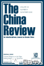
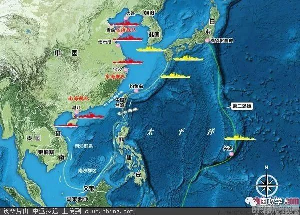

收录于合集

简 介
【 作者 】
左亚娜 ，政治学博士，毕业于英国布里斯托大学，现任上海交通大学国际与公共事务学院讲师。研究方向为国际关系学理论、国际法、国家身份认同与区域化的关系。
【 编译 】 汪琪茜
【 校对 】崔宇涵 庞林立
【 来源 】The China Review，Volume 18，Number 3，August 2018，pp. 149-176
【 期刊简介 】

** The China Review** ** __** (《中国评论》)是香港中文大学出版社自1990年以来每年出版的刊物。自2001年以来，每年4月和10月出版两次。期刊中既涵盖了研究国内政治和国际关系等的学术文章又包括社会、商业、经济发展、现代历史及艺术和文化的相关研究成果。它是中国唯一一本专门研究中华的英文期刊。
**【声明】
**
本周，国政学人微信公众平台将系统编译SSCI“台湾专题”系列文章。编译目的是 让我们更直观了解境外学者是如何看待和分析台湾问题的，文章观点不代表国政学人观点。
核心观点
自2016年英文就职以来，海峡两岸关系吸引各界学者的目光。学者们密切关注民进党（DPP Democratic Progressive Party）的内外政策、中国政府的反应，以及美国在海峡两岸可能扮演的角色。虽然台湾不是美国的正式盟友，但由于1954年《共同防御条约》和1979年《与台湾关系法》的存在，台湾享有事实上的同盟地位。 **本文考察了美国在处理两岸关系中的关键动向，认为世界秩序是决定两岸政策的关键。为了探讨美国在不同世界秩序下对台政策的转变，本文将以美国在不同历史时期对台承诺的转变作为突破口，通过联盟理论（ alliance theory）检视美国对台承诺的可靠性。**本文对世界秩序的探讨着眼于塑造和限制国家和其他政治实体行为的一般结构，同时将采用格伦•斯奈德关于结盟后安全困境的理论来进行分析。斯奈德认为，联盟成员面临两个主要困境：“放弃”和“诱捕”。前者的实质是失去或削弱了支持的期望，后者的意思是被拖入一场不共享或仅部分共享盟友利益的冲突中。 华盛顿和台北之间的事实上的联盟仅仅是由美国的利益所引导，台湾正在失去为美国的最佳战略利益服务的优势。基于此，本文认为，美国最终将选择放弃台湾。

文章导读
** 冷战秩序与台湾问题**
台湾问题源自于二战后的世界秩序。 美国 在两次世界大战中一跃成为世界霸主，填补了大英帝国衰落和欧洲秩序崩溃留下的权力真空，并 采取了两项支柱性战略：现实主义和促进自由经济秩序。前者以遏制、威慑和维持全球力量平衡为核心，其目的是要剥夺苏联扩大其在世界上的势力范围的能力。 中国内战爆发后，美国的观点认为 ， 台湾并不值得美国投入大量稀缺的军事资源，美国不应卷入中国内战，应该让台湾自生自灭。但是，这并不意味着美国放弃与大陆领导者“建交”的可能性，美国期望“在未来某一天，能够利用自治运动来达成美国的利益”。 然而，朝鲜战争的爆发改变了美国的态度， 美国改称： “台湾问题应该通过国际协议来解决，要用军事武力来保护台湾。” 1954年MDT成功签署标志美台联盟成立， 美国的战略是利用此联盟既能遏制中共收复台湾，又可以防止国民党反扑成功，以维持双方力量平衡。美国支持国民党只是因为台湾是遏制共产主义蔓延链条上的重要一环。
随着中苏同盟的解体，美国又改变其策略，利用这个机会加强了与中华人民共和国的关系。1979年，华盛顿与北京建立外交关系，并切断了与台北的所有官方关系。1979年12月31日MDT终止，美国军队随后从台湾撤退，同年美国颁布了《与台湾关系法》。表面上看，台北被遗弃，事实上美国对台湾的承诺虽被削弱了却并未完全放弃。
显然，华盛顿放弃或支持国民党的决定并非出于意识形态或国际协议，相反，它主要是由美国的国家利益驱动的。这一切都是美国全球战略考量的结果。
** ** 冷战后由美国价值观驱动的台湾政策****
1991年12月26日，苏联解体，资本主义阵营的安全压力迅速释放。维托里奥•埃马努埃莱•帕西(Vittorio Emanuele Parsi)认为，冷战的结束意味着世界秩序从 “均衡的和平”转变为“霸权的和平” 。世界进入了一个单极体系，至少是一个单极时刻，对于美国来说，无疑是个重建世界秩序的好机会。有研究发现， 这一时期的美国在执行外交政策时，往往寻求的是扩展美国的价值体系，更加关注如何运用经济全球化这一载体进一步传播自由民主的价值观。
与此同时，公众对国民党的信心崩溃、与华盛顿的外交关系破裂等都对台北的国内政治产生了巨大的影响。此外，台湾还面临着来自台独运动和“统一战线”战略的巨大压力。于是国民党在20世纪80年代推动了民主转型，并于90年代中期完成。这次成功的政治变革再次使台湾符合美国在巩固单极秩序道路上的利益诉求。冷战后，美国更加关注人权问题，而台湾对民主价值观的强调对华盛顿与北京的关系产生了影响。 **克林顿政府认为，不应该对 “政治和经济上取得显著进步的台湾”采取同1979一样的态度。**有一种支持“另一个中国”的声音认为：“如果美国利益包括支持海外民主和人权的话，就必须对台湾及其领导人表现出应有的尊重”。1994年9月27日，华盛顿方面表态：将支持台湾加入那些不以国家地位为先决条件的组织；将支持台湾在那些不可能成为其成员的组织中发表意见。 但除此之外，美国无法给台北更多的回应。
中国自1979年以来的快速经济增长使其成为一个重要的经济大国，尽管此时的北京和华盛顿之间存在巨大的差距，然而，一个拥有世界上最多人口和取得了举世瞩目的经济成就的崛起中的中国仍然令人印象深刻。另一方面，中苏两国领导人开始慢慢建立新的关系，并在许多领域得到了发展。在这种局面下，美国不得不与台湾保持一定的距离，若即若离。
反恐时期和“制造麻烦”的台湾
2001年美国遭受恐怖袭击后，北京立即表示支持“反恐战争”，此前将中国视为“战略竞争对手”的布什政府将中国重新定位为一个“建设性伙伴”，北京和华盛顿之间的合作达到更大的水平。布什政府对中国态度的转变表明中美关系处于尼克松总统1972年对中国开放以来的最好时期，同时也反映了美国对台政策的新变化。
10月份上海的APEC会议成为海峡两岸的一个爆发点。北京和台北无法就中国台北代表的人选达成一致，民进党政府遂决定不参加这次会议。但是台湾的缺席在亚太经合组织会议上没有引起任何关注。美、中、俄三国在此次会议上都有自己的议程：美国需要中国的合作和支持以支持其反恐战争；俄罗斯需要中国的支持来打击车臣的独立运动；中国需要俄罗斯和美国将新疆的独立活动定性为恐怖袭击。根本没有人关注台湾的缺席。
然而，当时的台湾领导人陈水扁误判了情况，低估了这些变化对台湾的影响，依旧采取行动，旨在实现从中国大陆台湾的永久的分离。 **但是美国并不打算让这种潜在危机爆发，毕竟美国的利益在防止任何单方面改变现状。美国在 2004年12月1日的例行记者会上明确表明美国反对任何可能使台湾走向独立的行为。**台北与华盛顿之间的关系几乎立即开始恶化，在陈水扁任期结束时，华盛顿认为陈水扁“极其不值得信任”，而他的政府则是“外行”和“制造麻烦”。
一个独立的台湾并不符合美国的国家利益。支持台湾独立将使华盛顿陷入与中华人民共和国的紧张关系中，代价颇高。台湾问题从来不是台湾本身的问题，更不能简单地归结为中美关系。作为一个大国和主导力量，美国在台湾问题上有比双边关系更宏伟的议程要考虑。当美国的国家利益受到质疑时，这种事实上的联盟是微不足道的。
此外，中国大陆在国际社会中的作用越来越大，北京与华盛顿的关系已经变得复杂，高度相互依赖，并与国际体系紧密相连。 简单地说，美国不会牺牲与中国大陆的关系，反而无条件地支持台湾的要求，台湾无法在今天这个时代提供符合美国最大利益的支持。很明显，政治认同不是决定联盟实力的关键，当战略利益与意识形态发生冲突时，前者战胜了后者。
未来的世界秩序与美对台政策
众所周知，战略模糊是美国在台湾问题上的政策核心。战略模糊通常被视为“双重威慑”：一方面防止大陆采取非和平手段，另一方面也不鼓励台湾独立。此种战略旨在发挥美国“平衡者”的作用。但是这种政策已经不再适合现在的美国。从目前形势来看：中国崛起为超级大国是不可避免的，台湾问题又太过混乱。
在以美国为首的自由主义秩序下，经济全球化不仅使得各国之间依存度提高，它也带来了许多非传统的挑战，如恐怖袭击，大规模移民，金融危机，重污染和其他全球性问题，这些问题都加强了全球合作和妥协。然而，英国脱欧、欧洲大陆右翼政治的崛起、特朗普的“美国优先”无不表示逆全球化趋势。世界体系正朝着多元化方向发展。 在这种秩序下，美国占据主导权，但权力不可避免扩散到诸如金砖四国和国际机构等新兴大国之中，而中国将成为一个足以挑战美国霸权强大的力量，美国的力量相对衰弱了。在这种情况下，加强对台湾的承诺不会有利于美国的战略利益。
A ．多元格局的消亡
美国的衰落主义和批评的学者们，普遍认为美国的优越地位是国际稳定所必需的，也是美国复兴的必备条件，而中国在其中扮演重要角色。 中国的崛起导致美国相信“自二战结束以来，亚太地区的问题比任何时候都要严重。”回顾奥巴马时代，美国的战略设计是逐步退出中东并重新回到亚太地区，因为担心美国会在该地区被边缘化。但特朗普上台后， 大部分注意力都集中在美国国内政治和经济复兴上，其外交政策的特点是不可预测性和不连贯性。特朗普的外交政策证明 ——美国不会与其他国家和国际机构共同分享权力或统治世界。在特朗普的统治下，多元化世界的愿景不会成形，我们将进入一个典型的权力竞争阶段。
****B ．中国与世界新秩序
回顾历史，很容易看出中国没有任何美国作为崛起大国时所享有的优势。所以从根本上说，中国决不具备超越美国或威胁美国的能力。美国担心的是潜在的全球力量再分配。换句话说，它是关于美国势力范围是否会受到挑战。保证美国的国家利益需要基本保护中国的核心利益。 中国政府一再声称台湾被视为其核心利益的一部分；“反分裂国家法”将使用非和平手段阻止台湾法律上的独立的条件合法化。在这种情况下，如果华盛顿要履行其作为事实上的盟友的职责，将会陷入安全困境。 中国没有能力挑战美国的霸权，但它确实有能力阻止美国处理有关其核心利益的问题。对于美国来说，如果涉及台湾海峡直接的军事冲突，台湾问题将成为一个沉重的负担；此外，美国需要与中国合作，一旦中国的核心利益，即台湾问题得不到保护，中国就不可能仅仅按照美国的条件与美国合作。总而言之，中国无法创造新的世界秩序，但它能够影响新世界秩序的形成方式。考虑到台湾问题是中国的核心利益问题，美国放弃台湾只是时间问题。
C ．西方联盟可能崩溃
如前所述，以美国为首的自由主义秩序依赖于两个重要的区域：亚太和欧洲。美国的战略计算必须考虑欧洲政治。民粹主义和安全危机的出现对传统西方联盟带来冲击。在未来几年，贸易关系和美国对欧洲的安全承诺将是决定欧盟命运的主要问题，也是决定世界秩序命运的主要问题。 权力平衡理论（The balance-of-power theory）可以很容易地预测二战后持续70年的秩序的崩溃。在这种情况下，美国将不得不放弃欧洲或扩大其绝对限制，以保持欧洲和俄罗斯的友好关系，如果可能的话。在这种情况下，台湾太过微不足道。无论世界秩序呈现何种形式的多元化，强权政治的全面回归或西方联盟，台湾都无法为美国的战略利益服务。本文开头对美国台湾政策的考察表明，华盛顿只有在台湾为其战略利益服务时才支持台湾。因此，预计华盛顿将放弃台湾以避免陷入困境。
** ** ** ** ** 总 结**********
美国并不会很快从台湾海峡撤退，与之相反，美国仍将介入两岸关系。 台湾问题、中国南海问题以及印度和东盟在很长一段时间都将是美国手中重要的谈判筹码。 **自从 1979年以来，美国传统对台政策一直没有改变，直到特朗普入主白宫之后，台湾问题的不确定因素才开始显现，但结构性制约会使台湾在一段时间内成为美国的工具。**特朗普政府模棱两可的态度令台湾方面“忧心忡忡”。
美国不可能立刻从亚太地区中全身而退。作为事实上的联盟，华盛顿和台北陷入了斯奈德困境，对于美国来说，放弃台湾可以避免步入“陷阱”，履行“联盟义务”又意味着和中国大陆发生冲突。也许未来美国仍然会选择正面的对台政策，但是这种政策不会持续太久。
和平统一是解决华盛顿与台北事实上结盟所带来的安全困境的唯一途径，但是，这并不意味着台湾问题可以轻易解决。 当前面临最重要的问题是逐渐增强的台湾民族意识。 虽然美国在亚太地区的影响将持续下去，但关键还在于海峡两岸的中国人民本身。
扫描下方小程序码查看原文p df
本文由国政学人微信公众平台编译首发
更多阅读
国政学人 （ID：guozhengxueren)
为方便学人及时阅读高质量文章
别忘把国政学人设置 星标 哦~